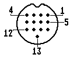

Previous
Next
TOC
Die Pinbelegung der (M)STE Monitorbuchse
1 Audio Out
2 Composite Video
3 Externe Taktselektierung
4 Monochrome Detect/Clock Input
5 Audio In
6 Farbe Grün
7 Farbe rot
8 +12V für Scart
9 Horizontal Sync
10 Farbe Blau
11 Monochrom Video
12 Vertikal Sync
13 Ground
Für S/W Monitorbetrieb muß der Pin 4 mit Pin 13 verbunden werden.

Kapitel Die Pinbelegung der (M)STE Monitorbuchse, Seite 1